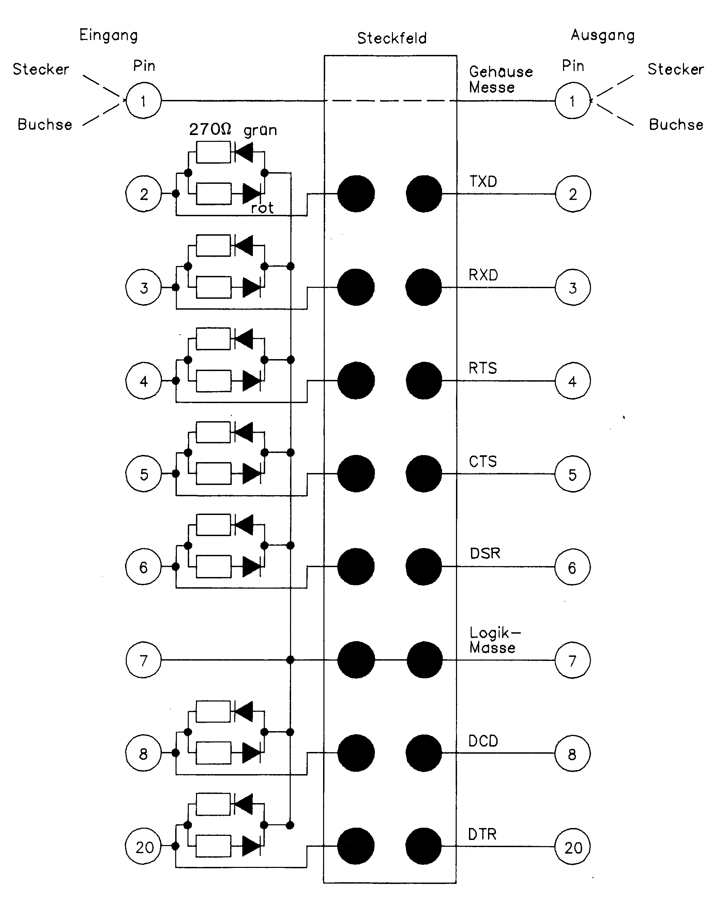
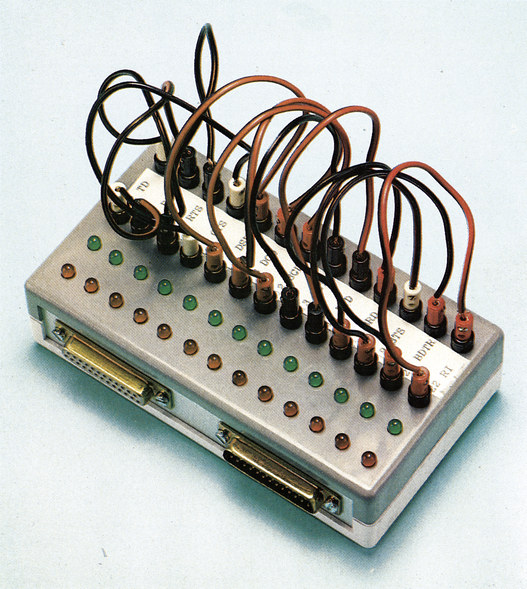

Fehlersuche leicht gemacht
Hier stellen wir Ihnen unseren RS232-Schnittstellen-Tester vor. Inzwischen will ihn kein Redakteur, der sich mit DFÜ beschäftigt, mehr vermissen. Eine Fehlersuche wird damit zum Kinderspiel. Auch das Problem eines geeigneten Adaptersteckers gehört damit endgültig der Vergangenheit an.
Häufig wollten in der Vergangenheit Datenübertragungen nicht so recht klappen. Entweder war das RS232-Interface, das Verbindungskabel oder ein Adapterstecker daran schuld. Bis der Fehler gefunden war, hieß es suchen, suchen, suchen. Das brachte uns auf die Idee, einen Schnittstellen-Tester zu bauen. Es sollte den logischen Zustand aller RS232-Leitungen anzeigen und gleichzeitig ein universeller Adapter für die verschiedensten Steckerbelegungen sein. Ebenso sollten Stecker mit Stecker und Buchsen mit Buchsen verbunden werden können. Hier stellen wir Ihnen das Ergebnis vor. Für etwa 50 Mark und etwas Geduld können Sie den Tester leicht nachbauen. Zum Nachbau sollten Sie folgende Werkzeuge und Teile haben:
Werkzeuge
Bohrmaschine
Körner
Lötkolben (16 bis 30 Watt)
Metallfeile
Sekundenkleber
Schraubstock
Material
1 Gehäuse 15 x 4 x 8,5
Seitenteile Alu-Blech
2 D-Sub-Stecker 25polig
2 D-Sub-Buchsen 25polig
8 5-mm-LED rot
8 5-mm-LED grün
16 Widerstände 270 Ohm, 1/8 Watt
16 Miniaturstecker (»Märklin-Stecker«)
16 Miniaturbuchsen (»Märklin-Buchsen«)
2 m Litze 0,5 mm2
2 m Klingeldraht
Schritt 1
Klappen Sie das Gehäuse auf und markieren Sie auf der Front die Bohrlöcher für die Miniaturbuchsen und LEDs. Damit die LEDs und Buchsen schön in einer Reihe stehen, sollten Sie die markierten Stellen vor dem Bohren ankörnen. Bohren und feilen Sie nun in die Seitenteile die Ausbrüche für die D-Sub-Buchsen und -Stecker. Beachten Sie dabei, daß die Stecker und Buchsen von der Sichtseite her in die Ausbrüche eingesteckt werden müssen. Auf jeder Seite sollte eine Buchse und ein Stecker angebracht werden. Mit den acht Schrauben und Muttern werden die Stecker und Buchsen befestigt.
Die LEDs lassen sich mit etwas Sekundenkleber in den vorgesehenen Bohrungen befestigen, die Miniaturbuchsen werden mit den dazugehörigen Muttern festgezogen.
Schritt 2
Verdrahten Sie die Schaltung entsprechend dem Schaltplan (Bild 1). Achten Sie unbedingt auf die Polung der roten und grünen LEDs, damit auch wirklich die roten LED bei High-Pegel und die grünen bei Low-Pegel leuchten.

Achten Sie bei der »fliegenden Verdrahtung« auch auf Kurzschlüsse.
Schritt 3
Zum Schluß werden die Steckverbindungen für das Steckfeld angefertigt. Die Verbindungskabel sollten so lang sein, daß sie von der obersten bis zur untersten Buchse reichen. Über dieses Steckfeld können Verbindungen beispielsweise sehr leicht als Nullmodem geschaltet oder bestimmte Leitungen wie RTS/CTS auf Low- oder High-Pegel gelegt werden. Bild 2 zeigt Ihnen ein fertiges Gerät, bei dem alle RS232-Leitungen, also auch die Sekundärleitungen für 1200/75 bit/s, angezeigt werden.
(Georg Betz/hm)